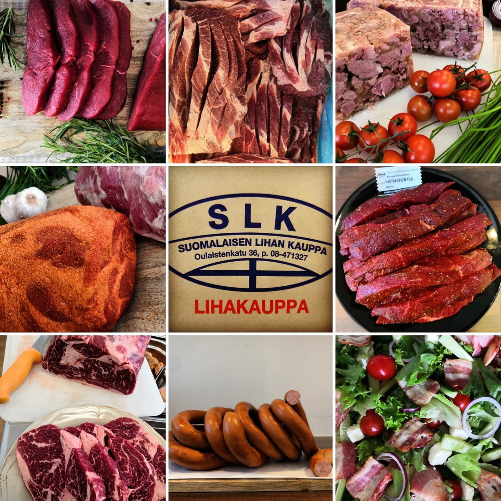

Suomalaisen Lihan Kauppa Oulainen

SLK - Suomalaisen Lihan Kauppa Ky on perustettu palvelemaan kaikkia yksityis- ja yritysasiakkaita. Suomalaisen Lihan Kauppa myy nimensä mukaan yleisesti suomalaista lihaa ja suomalaisesta lihasta valmistettuja lihajalosteita.( ..ja Ruottalaista pekonia.)
Kaikki naudanliha kauppaan tulee Atrialta. Sianliha tulee myös Atrialta. Poronliha Puolangalta ja karitsanliha Toholammilta. Eläimet karkeapaloitellaan ja tarkastetaan teurastamolla, mutta hienopaloittelu tapahtuu SLK:n tiloissa. Jauheliha jauhetaan kaupassa joka aamu (vain yhteen kertaan) oikeasta lihasta.
Suomalaisen Lihan Kaupassa on myös kahvila, josta voi ostaa kahvia. Kahvilan nisut on leivottu omalla paikkakunnalla Kaisan Kakkupuodissa.
Yhteystiedot
- Oulaistenkatu 36, 86300 Oulainen
- Puh. 08-471327
- posti(at)lihakauppa.net
Aukioloajat
- MA suljettu
- TI-PE 10-17
- LA 10-14
- SU suljettu

- © 2025 Suomalaisen Lihan Kauppa
Suunnittelu ja toteutus: Matias Tuura & MacomTech